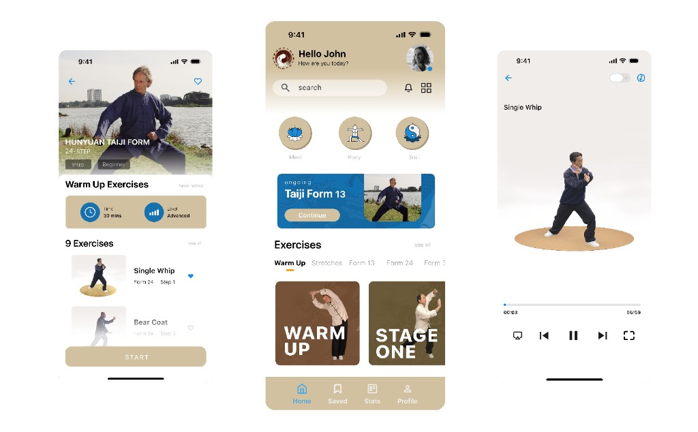

Onboarding

A health and movement platform concept for a Tai Chi practice community: onboarding, lesson flow, and media playback with a calm, disciplined visual language drawn from the academy's identity.
The work spans mobile UI, wireframes through high-fidelity screens, social assets, and video for the organization's channel—unifying education, branding, and day-to-day member experience.
Low-fidelity flow across core journeys—discovery, sessions, and profile. Replace each slot with your wireframe PNGs or a single combined artboard.

Channel trailer or long-form piece for Hunyuan Martial Arts Academy. Embed your hosted video (YouTube or Vimeo) or replace this block with an HTML video element.
Static or motion graphics for feeds and stories—two-up row plus a hero tile below, matching the reference layout.